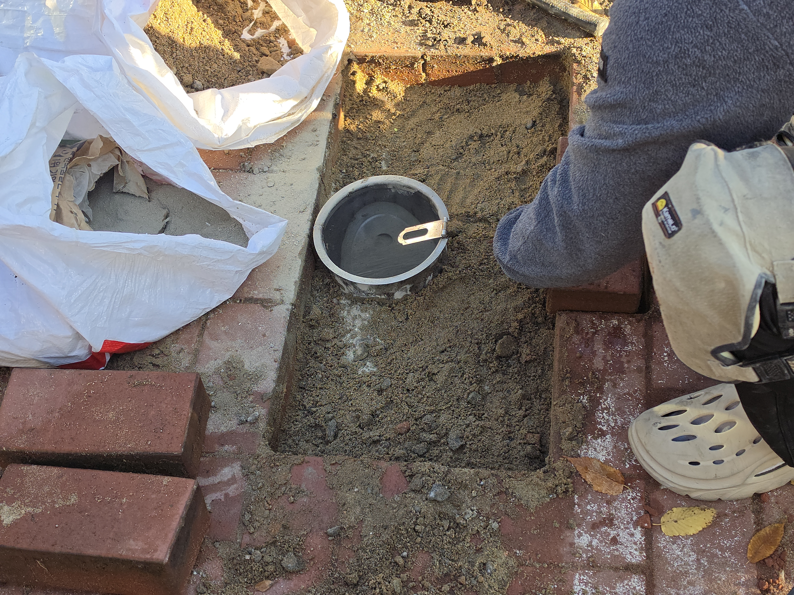
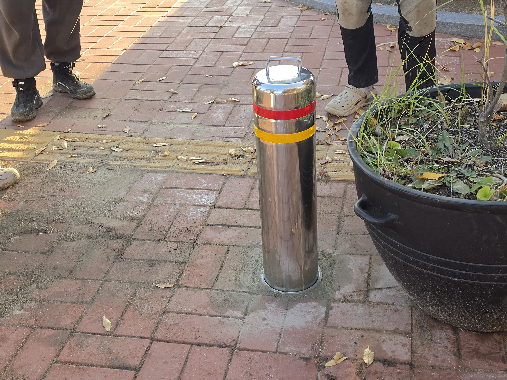

[현장 사례] 파손된 기존 볼라드 철거 및 신품 교체·앙카 정밀 고정
차량 충격으로 파손·이탈된 기존 볼라드와 잔여 앙카를 안전하게 제거한 뒤, 수평과 간격을 수정하여 흔들림 없이 견고하게 교체 시공했습니다.


📸 작업 과정과 상세 후기가 궁금하시다면 블로그에서 확인하세요.
이 현장 블로그 후기 읽기 →
볼라드 교체·수정 · 주차 안전바 1개 부분보수 전문
멀쩡한 시설물까지 통째로 갈아엎지 않습니다. 파손된 자리만 정밀 철거 후 바닥 재질에 맞춰 단단하게 재고정합니다.

차량 접촉으로 휘어진 볼라드·주차 안전바 1개 부분 교체부터 풀린 앙카 보강, 위치·간격 수정, 셀프 시공 실패 복구까지 현장 맞춤으로 해결합니다. 스텐(U자형·일자형)·우레탄·매립이동식·앙카이동식(자물쇠·체인 옵션) 모두 보유·시공하며, 구리·광명·경기도 전지역·서울·인천·충주 주말·야간 출장을 지원합니다.
내 현장은 어떤 상황인가요?
해당하는 상황을 눌러보시면 실제 현장에서 어떻게 해결했는지 바로 확인하실 수 있습니다.
기존 파손 기둥과 박혀있는 앙카 볼트를 깔끔히 제거한 뒤, 주변 간격과 높이를 맞춰 1개만 부분 교체합니다.
아스콘·보도블록 등 약한 바닥에 박혀 헐거워진 앙카를 보강 재고정하거나 차량 동선에 맞춰 설치 위치를 수정합니다.
바닥 천공 후 매립관을 묻는 매립이동식 또는 자물쇠 잠금·체인 고리 용접 볼라드로 무단 주차를 완벽히 차단합니다.
상가·빌라·물류센터 출입구 등 낮 시간 통제가 어려운 현장은 주말 및 야간 예약 출장으로 안전하게 시공합니다.
현장 바닥 상태에 맞는 공법으로 보이지 않는 기초 앙카부터 마감까지 꼼꼼하게 작업합니다.
차량 충격으로 파손·이탈된 기존 볼라드와 잔여 앙카를 안전하게 제거한 뒤, 수평과 간격을 수정하여 흔들림 없이 견고하게 교체 시공했습니다.

왜 마이홈리페어랩일까요?
고객의 불필요한 지출을 줄이고, 한 번 시공할 때 다시 빠지지 않도록 제대로 고정합니다.
| 비교 항목 | 일반 업체 / 단순 셀프 설치 | 마이홈리페어랩 맞춤 시공 |
|---|---|---|
| 시공 범위 | 소량 작업 거절 또는 멀쩡한 구간까지 전체 교체 권유 | 파손된 볼라드·안전바 1개만 정밀 부분 교체 및 위치 수정 |
| 바닥별 고정 공법 | 바닥 재질 구분 없이 기본 동봉 앙카만 체결 (쉽게 빠짐) | 아스콘·콘크리트·보도블록 강도에 맞춰 전용 앙카·케미컬·매립 시공 |
| 기존 파손물 처리 | 부러진 볼트 돌출 방치 또는 주변 바닥 깨짐 발생 | 잔여 앙카 그라인딩·매립 평탄화 후 깔끔하게 신품 안착 |
| 방문 일정 | 평일 주간만 가능해 주차장 통제·민원 발생 | 평일은 물론 주말·야간 예약 출장으로 영업 지장 최소화 |
30초 사진 견적 신청
볼라드·주차 안전바 교체/설치할 위치와 주변 간격이 보이는 사진
바닥 재질(아스콘·콘크리트·블록)과 파손·앙카 부위가 보이는 사진
예) "구리 수택동, 우레탄 볼라드 2개 교체, 토요일 오전 희망"
자주 묻는 질문 (Q&A)
네, 가능합니다. 멀쩡한 주변 시설물까지 전체 철거하지 않고 차량 충격으로 파손·탈락한 볼라드 및 주차 안전바 1개나 소량만 현장 바닥 재질에 맞춰 앙카식·매립식·이동식으로 깔끔하게 부분 교체 및 수정 보수해 드립니다.
네, 아스콘이나 노후 콘크리트 바닥은 일반 앙카를 쓰면 쉽게 빠집니다. 기존 부실 앙카를 정리한 뒤 바닥 깊이와 강도에 맞는 전용 앙카·보강 공법으로 튼튼하게 재고정해 드립니다.
매립이동식은 바닥을 코어 천공하여 매립관을 묻은 뒤 볼라드를 꽂아 고정하는 방식으로, 기둥을 뺐을 때 바닥 걸림턱이 없어 보행·차량 통행에 안전합니다. 앙카이동식은 바닥 위에 베이스 받침을 앙카로 고정한 뒤 기둥을 분리·결합하는 방식이며, 두 방식 모두 자물쇠 잠금 및 상단 체인 연결 옵션을 선택하실 수 있습니다.
네, 상가 주차장, 물류센터, 아파트 출입구 등 평일 주간 통제가 어려운 현장을 위해 주말 및 야간 예약 출장 시공을 지원합니다.
구리시·광명시를 포함한 경기도 31개 시·군 전지역과 서울특별시 전 구, 인천광역시 전지역, 그리고 충청북도 충주시 전지역까지 일정을 조율하여 직접 방문 시공합니다.
구리시·광명시를 비롯한 경기도 31개 시군 전체, 서울특별시, 인천광역시, 충주시 전 지역 읍·면·동 출장 상담이 가능합니다.
· 구리시: 구리시 수택동, 인창동, 토평동, 갈매동, 교문동, 동구동, 아천동, 사노동 전지역 볼라드 교체·수정·주차 안전바 설치
· 광명시: 광명시 하안동, 철산동, 소하동, 일직동, 광명동, 옥길동, 노온사동, 가학동 전지역 볼라드 교체·수정·주차 안전바 설치
· 남양주시·하남시·양평군·가평군: 남양주시 다산동, 별내동, 별내면, 와부읍(덕소), 진접읍, 오남읍, 퇴계원읍, 화도읍, 평내동, 호평동, 금곡동, 지금동, 도농동 / 하남시 미사동, 망월동, 풍산동, 덕풍동, 신장동, 감일동, 위례동, 초이동 / 양평군 양평읍, 양서면, 용문면 / 가평군 가평읍, 청평면
· 성남시·용인시·광주시·이천시·여주시: 성남시 분당구(정자동, 서현동, 수내동, 야탑동, 이매동, 판교동, 백현동, 운중동, 금곡동, 구미동), 수정구(위례동, 태평동, 신흥동, 수진동, 고등동), 중원구(성남동, 상대원동, 은행동, 금광동) / 용인시 수지구(풍덕천동, 죽전동, 동천동, 성복동, 상현동, 신봉동), 기흥구(구갈동, 신갈동, 보정동, 동백동, 영덕동, 서천동, 마북동), 처인구(역북동, 김량장동, 고림동, 포곡읍, 모현읍) / 광주시 태전동, 고산동, 오포동, 능평동, 신현동, 초월읍, 곤지암읍 / 이천시 창전동, 중리동, 증포동, 부발읍 / 여주시 홍문동, 창동, 오학동, 가남읍
· 수원시·화성시·오산시·평택시·안성시: 수원시 영통구(광교동, 이의동, 원천동, 매탄동, 영통동, 망포동), 팔달구(인계동, 화서동, 우만동, 매교동), 권선구(금곡동, 호매실동, 권선동, 곡반정동, 세류동), 장안구(정자동, 천천동, 조원동, 율전동, 파장동) / 화성시 동탄1신도시·동탄2신도시(반송동, 능동, 청계동, 오산동, 목동, 산척동, 송동, 영천동), 봉담읍, 향남읍, 병점동, 진안동, 새솔동, 남양읍 / 오산시 세교동, 수청동, 운암동, 원동, 갈곶동 / 평택시 고덕동, 비전동, 동삭동, 세교동, 지제동, 청북읍, 안중읍, 송탄동 / 안성시 공도읍, 대덕면, 옥산동, 아양동
· 안양시·군포시·의왕시·과천시·안산시·시흥시: 안양시 동안구(평촌동, 비산동, 관양동, 호계동, 범계동), 만안구(안양동, 석수동, 박달동) / 군포시 산본동, 금정동, 당동, 당정동, 부곡동, 송정동 / 의왕시 내손동, 포일동, 청계동, 오전동, 고천동, 삼동 / 과천시 별양동, 원문동, 부림동, 중앙동, 갈현동(지식정보타운) / 안산시 단원구(고잔동, 초지동, 선부동, 원곡동), 상록구(사동, 본오동, 성포동, 월피동, 이동) / 시흥시 배곧동, 은계동, 목감동, 장곡동, 정왕동, 능곡동, 신천동, 대야동
· 부천시·고양시·김포시·파주시·의정부시·양주시·동두천시·포천시·연천군: 부천시 옥길동, 범박동, 중동, 상동, 신중동, 심곡동, 원미동, 소사동, 오정동, 여월동 / 고양시 일산동구(백석동, 마두동, 장항동, 정발산동, 풍동, 식사동, 중산동), 일산서구(주엽동, 대화동, 탄현동, 일산동, 덕이동), 덕양구(화정동, 행신동, 삼송동, 원흥동, 향동동, 덕은동, 지축동) / 김포시 구래동, 마산동, 장기동, 운양동, 걸포동, 북변동, 사우동, 풍무동, 고촌읍 / 파주시 운정신도시(와동동, 야당동, 동패동, 목동동, 다율동), 금촌동, 문산읍 / 의정부시 민락동, 낙양동, 신곡동, 용현동, 가능동, 의정부동, 호원동, 장암동 / 양주시 옥정동, 회천동, 고읍동, 덕정동 / 동두천시 지행동, 생연동 / 포천시 소흘읍, 신읍동 / 연천군 전곡읍
· 동북권: 노원구(중계동, 상계동, 하계동, 공릉동, 월계동), 도봉구(창동, 쌍문동, 방학동, 도봉동), 강북구(미아동, 번동, 수유동, 우이동), 성북구(길음동, 돈암동, 정릉동, 장위동, 석관동, 보문동), 중랑구(면목동, 상봉동, 중화동, 묵동, 망우동, 신내동), 동대문구(장안동, 전농동, 답십리동, 이문동, 휘경동, 제기동, 용두동), 광진구(구의동, 자